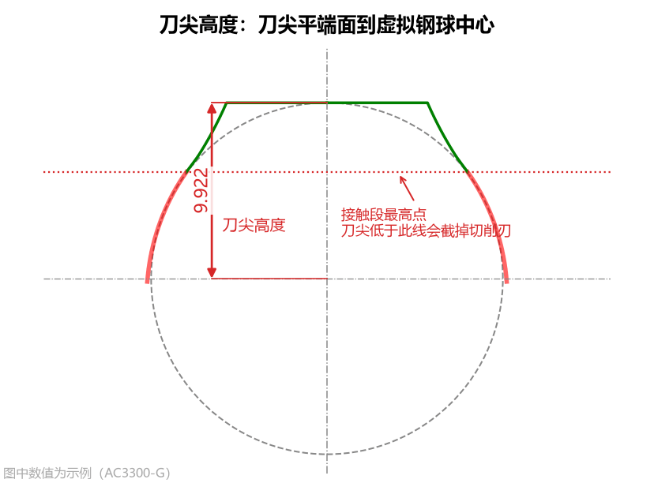
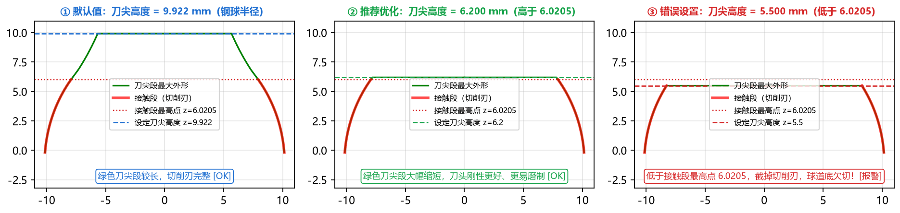
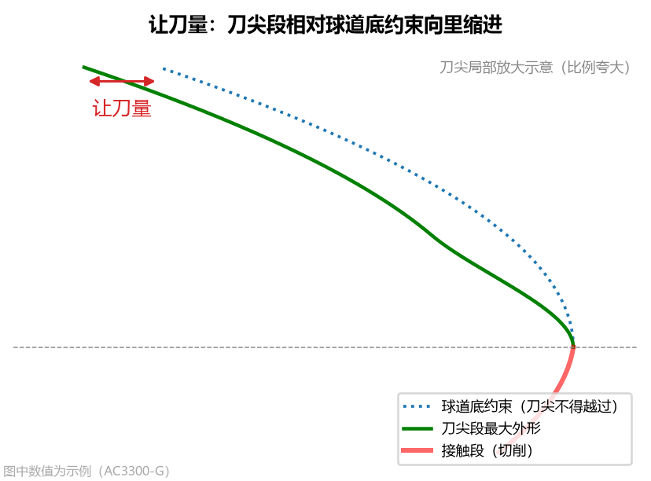
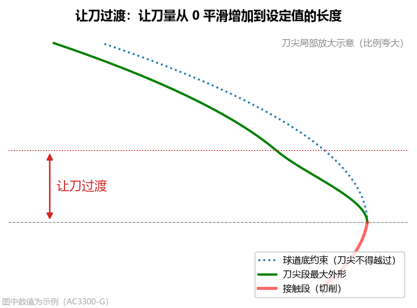
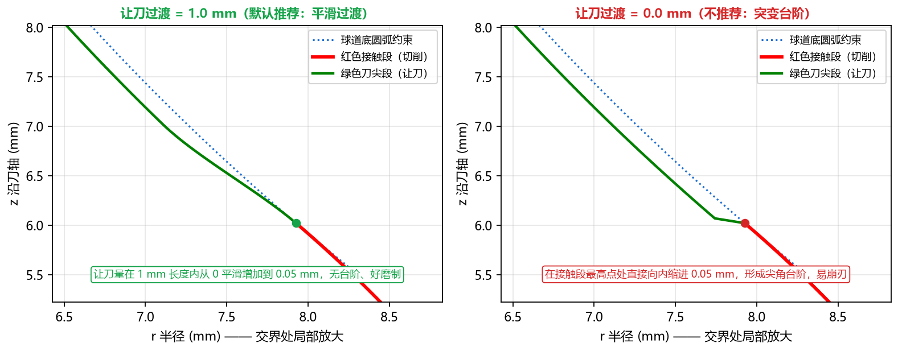
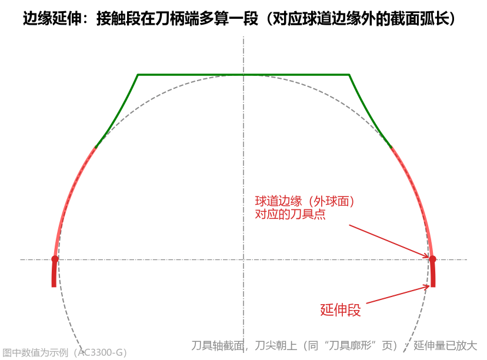
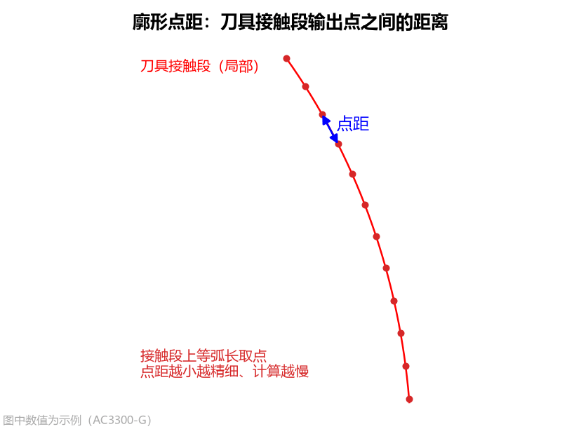

3.1 刀尖与廓形控制参数
本组参数位于高级参数面板的第一栏 刀尖与廓形，共包含 5 个参数，用于控制成型刀具在刀尖端面（对应球道底部顶隙区）与接触段末端（对应球道外球面边缘）的几何边界及输出点距。
1. 刀尖高度 (tip_z)

- 界面名称：
刀尖高度 - 单位：
mm - 默认值：
9.922（默认等于虚拟钢球半径 ） - 数值范围：
工程含义与设置原则
刀尖高度 定义了刀具轴向方向上，刀尖平端面到虚拟钢球中心（刀具原点 ）的距离（沿刀轴、朝刀尖方向为正）。
在球道加工中，刀头廓形分为两个功能区段：
- 接触段（红色实线）：真正参与切削球道工作面（从外球面边缘一直到球道底部接触边界）的刀刃段，必须精确磨制；
- 刀尖段（绿色实线）：从接触段最高点延伸到
刀尖高度平端面的前端区域，正对着球道底部的非工作顶隙区，不参与切削，仅作为刀尖允许的最大外形边界（实际刀具可在此绿线内修整为倒角或平端）。
刀尖高度的三种状态与实际顶隙智能校核（关键！）

如上图所示，以默认 AC3300-G 零件为例，其接触段最高点为 z = 6.0205 mm（显示在左下计算结果栏的 接触段 z 最大值），虚拟钢球半径为 9.922 mm：
- ① 默认值（
刀尖高度 = 9.922 mm）- 表现：完整覆盖全部红色切削接触段，绿色刀尖段一直延伸到虚拟钢球半径高度处平切收口。
- ② 推荐工程优化（
刀尖高度 = 6.200 mm，略高于接触段最高点6.0205）- 工程技巧：如果想让刀头前端更短促结实、刚性更好且更容易磨制，可先查看计算结果栏中
接触段 z的最大值（如6.0205），然后将刀尖高度减小到该值上方附近（如设为6.2）。此时红色切削刃 100% 保持完整，而绿色不切削刀尖段大幅缩短！
- 工程技巧：如果想让刀头前端更短促结实、刚性更好且更容易磨制，可先查看计算结果栏中
- ③ 低于接触段最高点（如双圆弧截面按钢球半径填
9.875 mm，而尖底接触段最高点为10.2269 mm）- 物理影响：刀尖侧切球道底的那一小段刃口被刀尖平端截去，切出的球道底部会比理论设计略浅一点（即产生
球道底欠切），但两侧钢球工作接触区丝毫不受影响！ - 软件的智能分级判定：
- 若钢球实际落座后的
实际顶隙仍在图纸顶隙下限之上（例如AC10000双圆弧球道，刀尖高度填9.875 mm截去了刀尖侧0.35 mm，球道底欠切0.048 mm，但钢球实际落座后的实际顶隙仍有0.038 mm > 下限 0.02 mm）：此时软件将其判为可用（不作为错误报警），并在结果栏清晰说明截去量与实际顶隙余量； - 若截去过多导致
实际顶隙低于顶隙下限（甚至擦碰钢球底）：此时计算结果栏会标红报警请把刀尖高度调大（至 X.XXXX 可完全消除），提醒您必须增大刀尖高度。
- 若钢球实际落座后的
- 与圆弧近似刀具
刀尖延伸的联动：- 对于圆弧近似刀具，
刀尖高度同样限制了圆弧刀尖端面的最大轴向高度 ； - 若您在【圆弧近似】中设置了
刀尖延伸 > 0，请确保刀尖高度大于延伸后的终点 ，否则延伸量会被刀尖高度截断并标红提示未全部做到。
- 对于圆弧近似刀具，
- 物理影响：刀尖侧切球道底的那一小段刃口被刀尖平端截去，切出的球道底部会比理论设计略浅一点（即产生
2. 让刀量 (tip_relief)

- 界面名称：
让刀量 - 单位：
mm - 默认值：
0.05 - 常见范围：
0.02 ~ 0.05 mm
工程含义与影响
让刀量 是指绿色刀尖段（不切削部分）相对于球道底约束圆弧向内缩进的径向避空量：
- 设置目的：为主轴跳动、对刀误差和砂轮/刀具磨损留出安全余量，防止刀尖在摆动过程中擦伤或啃伤球道底。
- 对结果的影响：只影响绿色刀尖段，完全不影响红色切削接触段。不建议设为
0（设为0时刀尖理论上正好贴着球道底擦过）。
3. 让刀过渡 (tip_relief_len)

- 界面名称：
让刀过渡 - 单位：
mm - 默认值：
1.0 - 数值范围：
工程含义与对比效果
让刀过渡 定义了沿着刀轴方向，让刀量从 0（接触段最高点处）平滑增加到设定 让刀量（如 0.05 mm）所经过的轴向过渡长度。

让刀过渡 = 1.0 mm（默认推荐）：红色接触段与绿色刀尖段在交界处平滑相切过渡，无台阶、无尖角，砂轮修整与磨刀走刀顺畅；让刀过渡 = 0.0 mm（不推荐）：在接触段最高点处刀刃直接向内突变缩进，形成尖角台阶，不仅难以磨制而且极易崩刃（当让刀量 = 0时此项不起作用）。
4. 边缘延伸 (extra_extend)

- 界面名称：
边缘延伸 - 单位：
mm - 默认值：
0.3 - 常见范围：
0.2 ~ 0.5 mm（点表只到边缘时填0）
工程含义与设置建议
星形套球道与外球面（直径 sphere_d）的交线即为球道开口边缘。边缘延伸 让刀具齿形在球道边缘之外朝刀柄侧再多算一段（对应球道边缘外的截面弧长，默认 0.3 mm）：
- 工程作用：为工件外球面车削尺寸偏差和刀具对刀定位误差留出余量，确保球道开口边缘能够 100% 切到位，不留未切净的毛刺台阶；
- 图表与结果栏显示：在
精确刀具廓形页签中，边缘延伸段会单独以橙色粗实线标出，并在左下角提供球道边缘局部放大窗；在计算结果面板第 二 分块中，也会分别列出接触段（到球道边缘）与边缘延伸 ... mm的坐标范围； - 特殊情况：当
截面类型选点表(CSV)且导入的点表数据刚好只给到球道边缘为止时，请将边缘延伸填为0（若填了正数但点表未超出外球面，软件会自动提示边缘延伸未生效）； - 对结果的影响：只延长接触段靠近刀柄一侧的长度；由于拟合范围略微加长，会轻微影响圆弧近似的拟合数值。
5. 廓形点距 (profile_step)

- 界面名称：
廓形点距 - 单位：
mm - 默认值：
0.01 - 数值范围：
工程含义与设置建议
廓形点距 控制刀具接触段沿廓形弧长等距输出的采样点间距，同时作用于界面绘图、刀具 DXF 和 刀具点表 CSV：
- 默认
0.01 mm：兼顾极高的磨刀轮廓精度与秒级计算响应； - 加密点表（如
0.005 mm）：当精密磨床或三坐标检测需要更密集的点表时可设为0.005； - 注意：该参数不影响
基本轮廓（Table 2）的导出点数（后者由高级参数中的基本轮廓点数单独控制）。